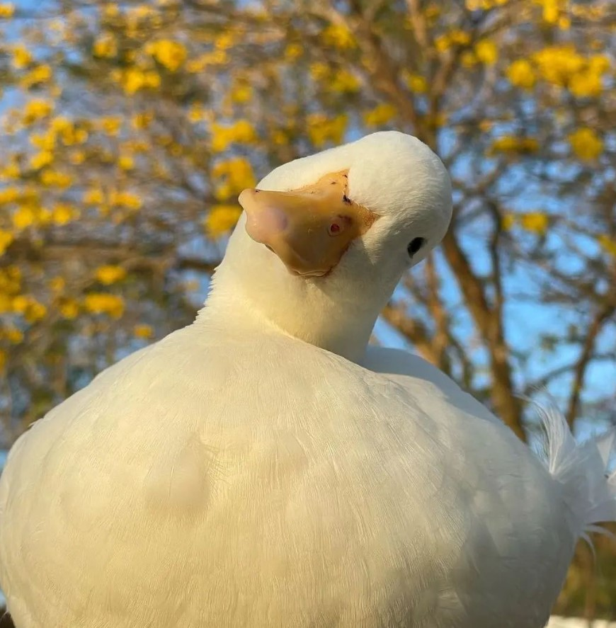

Les Canards
Mon avis sur quelques races de canard
| Race |
Note |
| Canard Mignon |
∞/10 |
| Canard d'Estaires |
12/10 |
| Canard Cayuga |
10/10 |
| Canard Colvert |
8/10 |
| Canard de Saxe |
6/10 |
| Canard Mandarin |
5/10 |
| Canard Arlequin |
7/10 |
Liste des choses à faire avec un canard
- Se promener
- Jouer
- Le faire combattre contre d'autres canards
- Faire la course
- Prendre le controle du monde et en faire un empire canard
- Le regarder s'amuser dans l'eau
- Le caliner
